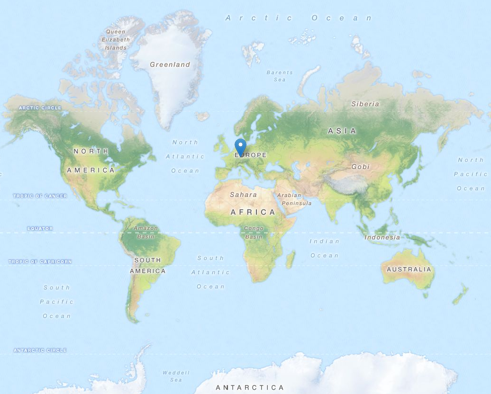
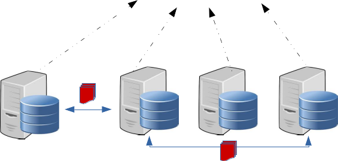

Your browser doesn't support the features required by impress.js, so you are presented with a simplified version of this presentation.
For the best experience please use the latest Chrome, Safari or Firefox browser.
Spatial Partitioning and Querying for Apache Spark
Hariharan Gandhi (hariharan.gandhi@de.ibm.com)

In this presentation
What's the big deal
What do we want to solve
How did we Solve :)
Trending Scenario
Very large volume of Geo-spatial data
Businesses need location aware services
- Like tweets in an particular area
- Weather information of a holiday spot which you plan to visit over the vacation
- Take me through the shortest route
Seek support from Parallel
computing platforms
To handle such large volumes
But unfortunately, no native support (yet))
Needs modifying internal implementations
Why partition ?
Spatial Indexing for retrieval
Range Queries, grouping – Network cost due to shuffling between clusters/nodes

When to partition ?
GeoSpatial operations intense application,. Eg: Location aware services
- Ex: Maps, Uber, Jodel, AirBnB, Emergency Services
Major interests of queries are Geospatial:
Multiple reads
The plan
Introduce a partitioning scheme in Apache Spark that partitions data-sets considering Geo-spatial info:
Communication in distributed environment:
- minimize network traffic by allowing spark program to control RDD partitioning
Retained Spatial Locality:
- nearby points are probably in the same partition / cluster
Minimize data points shuffling during Geo-spatial queries
Optimized for Search, Range queries on Geo-points
Implementing on Spark
GeoHash Partitioner
GeoHash Query Layer
Variable Length Indexing
We need a Mapping from grid to spark nodes
Variable resolution grids mapping is preserved in a data structure
Custom Partitioning
Step1: Load Aware
Step2: Variable length to generate Hash
Step3: Map these hash to RDD partitions
Custom Partitioner Code
Implementing on Spark
GeoHash Partitioner
GeoHash Query Layer
Query affects all nodes
Incoming query is executed on all nodes
Large scans
GeoHash Query Layer
Leverage the knowledge of previous partitioning and efficiently query on subset of data:
Identify the type of Query
Determine the areas of interest from the overall world
Figure out partitions that contain our interested region
Slice out the partitions from the RDD
Push the query on the final RDD based on the Query predicates
Thank you